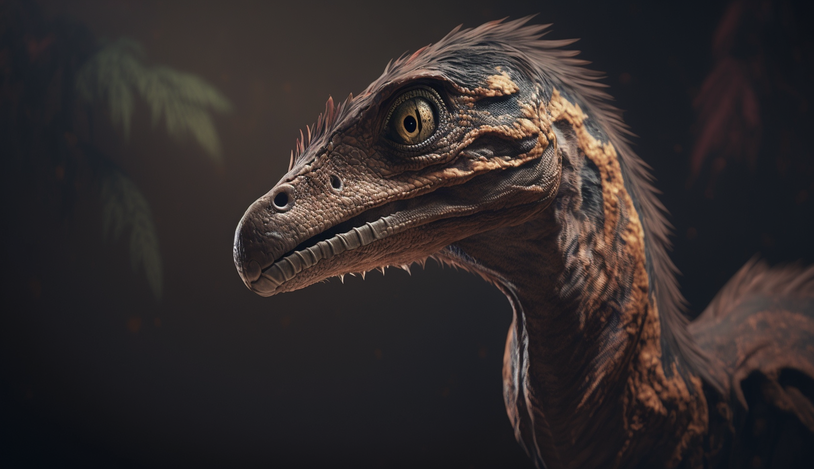

Tiere
Öffnungszeiten & Preise
Restaurante
Karte
Rechtliches
Unsere Tiere
Unsere Velociraptoren
Name: Danijel
Höhe: 1m
Länge: 2m
Gewicht: 15kg
Alter: 4
Sep 03
Danijel, der männliche Velociraptor, ist knapp zwei Meter groß und wiegt rund 15 Kilogramm. Sein Körper ist schlank und muskulös mit einem langen Schwanz, der für Balance und Wendigkeit sorgt. Seine ausgeprägten Kiefer sind mit scharfen Zähnen besetzt, die er auf Beutetiere stürzt und festhält. Seine Federn sind grau-braun mit schwarzen Streifen, die über den Körper verlaufen. Danijel ist ein schneller und listiger Jäger, der mit seinen scharfen Augen und dem ausgeprägten Gehör seine Umgebung immer im Blick hat.

Name: Jonna
Höhe: 0.8m
Länge: 1.8m
Gewicht: 12kg
Alter: 5
Jul 12
Die Velociraptorin Jonna ist ein schlanker und agiler Dinosaurier mit einer dunkelgrauen Federbedeckung, die ihr einen getarnten Look verleiht. Sie ist mit scharfen Krallen und Zähnen ausgestattet, die sie geschickt beim Jagen einsetzt. Ihre Augen sind groß und gelblich, was ihre nächtlichen Jagdfähigkeiten unterstützt. Jonna zeichnet sich durch ihre ausgeprägte Intelligenz und soziale Fähigkeiten aus, die sie in engen Verbänden mit ihren Artgenossen zusammenarbeiten lassen.
nach oben
Allosaurus
Anklyosaurus
Brachiosaurus
Coelophysis
Mososaurus
Rex
Spinosaurus
Stegosaurus
Triceratops
Velociraptor